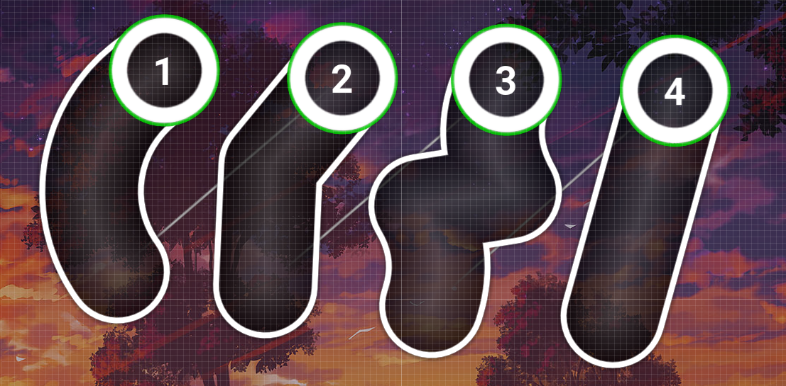
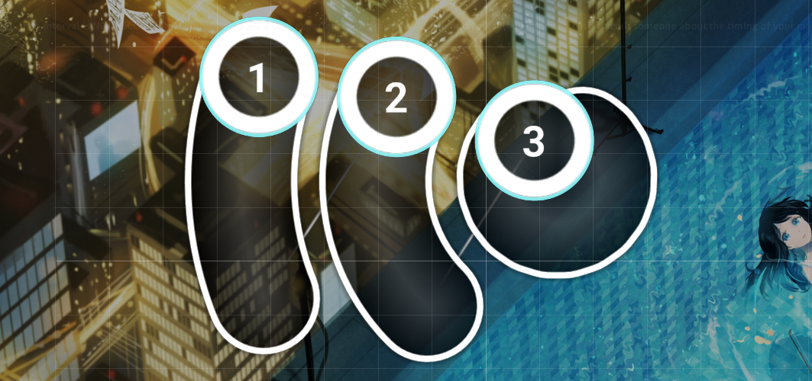
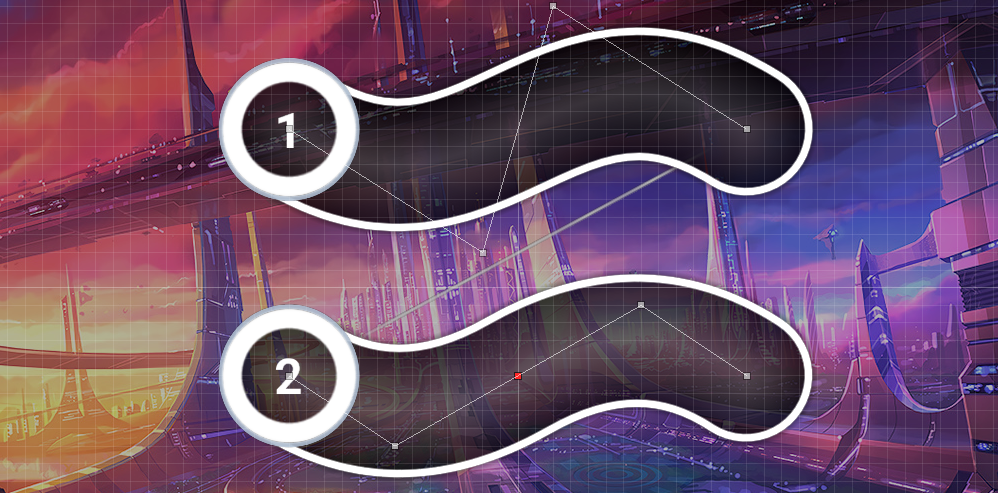
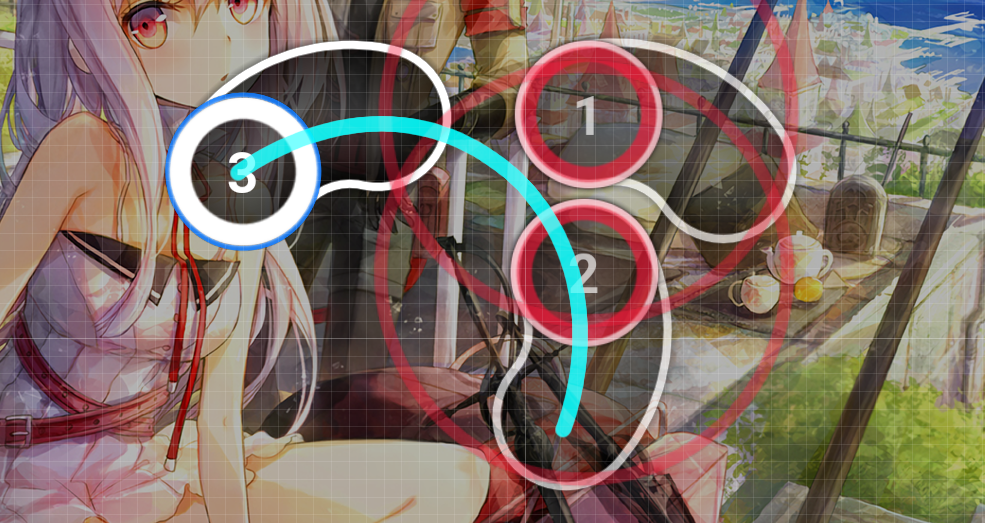

Now that we know how to time a song and how to figure out basic rhythm, we'll start talking about sliders and what visual impact they have, as well as how they can impact gameplay.
Since you've already timed a song, you might want to make a new diff for it instead of timing a new song. Or, you might want to get more practice with timing songs. If you need a refresher on how to do either of these things, refer to the previous lesson.
Slider creation, honestly, kinda sucks, so it's worth covering the basics of actually making sliders. Left clicking starts the slider, left clicking every time after adds an anchor, right clicking ends the slider. Adding an anchor on another anchor makes a red anchor. After you're done making a slider, you can Ctrl+LClick to add a new anchor.
A slider with 2 anchors makes a straight line. A slider with 3 anchors (with the middle one not red) makes a perfect circular arc. Sliders with more anchors calculate gray anchors as Bezier curves.
By dragging the end of a slider in the top timeline, we can also create reverse arrows.
And a useful shortcut to remember is Ctrl-G, which will swap the sliderhead and sliderend. This shortcut is so often used that it literally goes by the name "Ctrl-G." Unexpected things can happen if the sliderend is not in the same place as the last anchor, which is another reason to keep the last anchor as close to the sliderend as possible.
We can rotate sliders with Ctrl-Shift-R. Ctrl-H does a horizontal flip and Ctrl-J does a vertical flip. (I like to call Ctrl-J a "jertical flip" since this helps me remember to use J.) These, and Ctrl-G, work on hitcircles too, but Ctrl-G can have strange behaviour when used with anything other than 1 slider or 2 hitcircles.
Sliders are simple objects. Not quite as simple as circles, but still really simple: You point and click on the head, you trace and hold on the body, and you release on the end.
Previously, we learned that clicking is fun. That hasn't changed. Clicking on the head of a slider is still more fun than releasing a slider. As such, the player will feel that the sliderhead is more important than the sliderend.
Making rhythms with sliders is usually pretty easy. The key ideas to keep in mind are:
Mappers will almost always land sliderends on three types of beats:
The first on that list is more technical. Since releasing a slider provides some feedback, but not as much as clicking, sliderends allow for elegant ways to express polyrhythms. In some cases, it may be worth adding a slider that starts on an otherwise less-emphasized beat just so clicking-versus-releasing patterns are engaging. The most common of these cases are those in which the main instrument is holding a note or pausing and the emphasis shifts to the background instruments.
In addition, during calm parts of the song, mappers will often use long sliders starting on one important sound and ending on another, which halves the clicking density. In extremely calm parts of the song, mappers will use even longer sliders.
It is often said that sliderheads should land on beats that are of equal or greater strength than their tails. Many newer mappers take "equal or greater" to mean there is no difference, but experienced mappers almost never place sliderends on equal-strength beats, aside from during calm portions of the song.
Recall from the previous lesson that not all ticks have equal implied strength, so ticks with the exact same sounds can still have different strengths. Here is that list again:
Try to avoid using more than 1 reverse arrow when possible, since sliders with many reverses don't make for very engaging play.
As an example of these emphasis concepts, I picked a random map in my client, which happened to be Future Cider by Sing. The map has 614 sliders, about 30 of which either start on beats lower in that list than the ones they end on, or pass through white ticks. All but one of those sliders start on red ticks. All of them are also mapped to very strong rhythms in the music that contradict the list, so it would make less sense for the map to follow the list. None of those sliders pass through strong sounds.
Slider shapes are nearly infinite, which gives them a huge amount of creative potential. On the other hand, modern mapping recognizes that not all slider shapes are equal, as some shapes are better suited to some purposes than others and some shapes are just plain ugly.
Above, I implied that sliders should never be used less frequently than the rhythms discussed in the previous lesson. Since most music has decently dense rhythms, this means that almost all sliders are pretty short in time, and this means they're also usually pretty short in length.
Let's take a look at a few common slider shapes. Below are sliders numbered 1 through 4. Imagine a map using only sliders that look like number 1, and try to think of what kind of song the mapper might be representing, then do the same for 2 through 4.
When I see these sliders, these are the things I tend to think of:
You might also have realized that mixing these shapes makes for more interesting maps, and allows for impactful mapping of songs that feature different kinds of sounds. Just keep in mind that a slider shape that only appears once has a large impact, whereas players get accustomed to slider shapes that appear many times.
Because there are just so many possible slider shapes, newer mappers sometimes shoehorn ridiculously complex sliders where they aren't impactful and don't contribute to the map. On the other hand, experienced mappers all use the same general shapes, and even maps with strange sliders use shapes that are more similar than they might first appear.
When picking the set of sliders that we'll always use in our maps, we consider which sliders will look good in many situations, as well well as what players are accustomed to seeing. As noted above, certain slider shapes have connotations, so we like to pick from those for inspiration.
Curved sliders are good in many places, and they make up the bulk of short (not kick) sliders. It's also fair to separate curves by how tight they are.
In the above image, slider 1 is a gently curved slider, slider 2 is moderately curved, and slider 3 is tightly curved. Of these shapes, the most common is probably the moderate curve, but gentle curves are also used fairly often. Tightly curved sliders are seldom used except to form (almost) perfect circles.
Another opportunity we have when using curved sliders is that we can blanket them, meaning we can make them nicely, evenly spaced with other curved objects. In the above image, for example, slider 1 is blanketed on 2 and 2 is blanketed on 3. Slider 2 could also be blanketed on a hitcircle, sliderhead, or sliderend, but it's difficult to do this with 1 (since it'd be so far away), and impossible with 3.
The easiest way to blanket an object is to use some circle that the object naturally creates. Notably, sliderheads and hitcircles have approach circles and sliders have the sliderball ring. If we align the blanketing slider with one of these circles, the resulting blanket should be perfect.
Straight sliders can be used for just about any sound, if the map sets them up correctly. They look good when blanketed by curved sliders, when parallel with angle sliders (single red anchor), and when horizontally or vertically flipped with other straight sliders. In addition, kicksliders (1/4 snap, blue ticks) are practically forced to be straight lines to look good.
A feature of many modern maps is that their straight sliders, for whatever reason, tend to be angled somewhere between 3 and 10 degrees from vertical or horizontal, with the most common angle being 5 degrees. (Note that not all their straight sliders are like this, just most.)
I can't actually explain why mappers chose 5 degrees, but there is meaning behind the use of consistent tilt: Tilted sliders look more engaging than perfectly horizontal or vertical sliders, and maintaining the same tilt through a map keeps the map looking organized.
Making good tilted sliders takes up most of the time we'll use grid snap, since we want our slider to be perfectly vertical or horizontal before we tilt it.
(I call these "angle sliders" since "red anchor sliders" can occasionally refer to sliders with more than 1 red anchor.)
Angle sliders aren't very common in TV Size maps, but they're and fairly common in maps of metal songs, and extremely common in wub maps. As such, I'll cover them in more detail in a later lesson.
For now, I'll echo pishifat's advice. If we want to use an angle slider, we should keep the angle moderate, like with the curved sliders. If the slider is pretty short, we set the red anchor in the middle of the slider. If it's a longer slider, we place the red anchor 1/3 of the way from the start or end.
Hook sliders are also angle sliders, but I caution against using them for the same reason I caution against using angle sliders in general: The player associates them with certain sounds, and we have to be careful to make sure we're connecting our slider shapes to the song.
In general, newer mappers should avoid making complex sliders, since these shapes are the easiest to misuse. When used without an extreme amount of care, Bezier curves look unnatural and disgusting, so unless we have a specific shape in mind, we should avoid sliders with more than 3 anchors. This includes sliderart and sliderwriting, which I'll cover in a later lesson.
The one complex slider shape that I'd recommend to newer mappers is the wave:
The methods shown above are the most common ways to make the shape and are by far the simplest. Either is acceptable.
When making this shape, we have to ensure it's symmetrical, so we turn grid snapping on and place the first and last anchors at the same distance from the midline and at the same height. Then we place the top and bottom anchors at the same distance vertically and horizontally from the midpoint. As long as we keep the final anchor very close to the center of the sliderend, the shape will look a bit like the ones above. We only rotate and move the shape into place after it looks perfect.
If a wave is less than three times as wide as it is tall (before rotation), it'll start to look bad. Placing the top and bottom anchors too close or too far horizontally will also lead to ugly shapes.
Waves are extremely powerful shapes when used rarely, but if used often, they lose their uniqueness, so try to use the wave as a means of emphasis rather than as a base shape.
Exiting a slider will leave the player with a certain direction of movement and entering a slider will give the player a certain direction of movement. Therefore, it's important for us to discuss how to place sliders to align the map's feel with the player's expectations.
In the image below, sliders 1 and 2 are possible placements to follow slider 3.
Slider 2 makes for a more natural movement than slider 1 since the player will probably be more comfortable following an arcing path through 3 and into 2 (the blue line) than moving in a straight line to get to 1.
If we wanted to use a straight slider rather than a curved one, we'd put its head at slider 2 and angle it 5 to 10 degrees counterclockwise of vertical, since such an angle would create the same natural movement as slider 2.
If we instead had a hitcircle where the sliderend of 3 is, we'd also prefer slider 2 over slider 1 since the curve of slider 2 implies the same movement line as before. Slider 1 implies a movement line that starts lower than the end of slider 3.
If you're not sure what would feel natural, it's usually better to take a turn that's too tight than a turn that's too wide.
We now have some sense of what slider rhythms should emphasize, and we know which slider shapes look good.
Mappers' styles are constantly changing, and slider design is a component of style that mappers only figure out after looking at many maps and copying their styles.
As was mentioned above, we'll come back to slider design, but before that, we'll pick up some crucial concepts that will allow us to better understand slider design. The first of these is emphasis, including comfort.